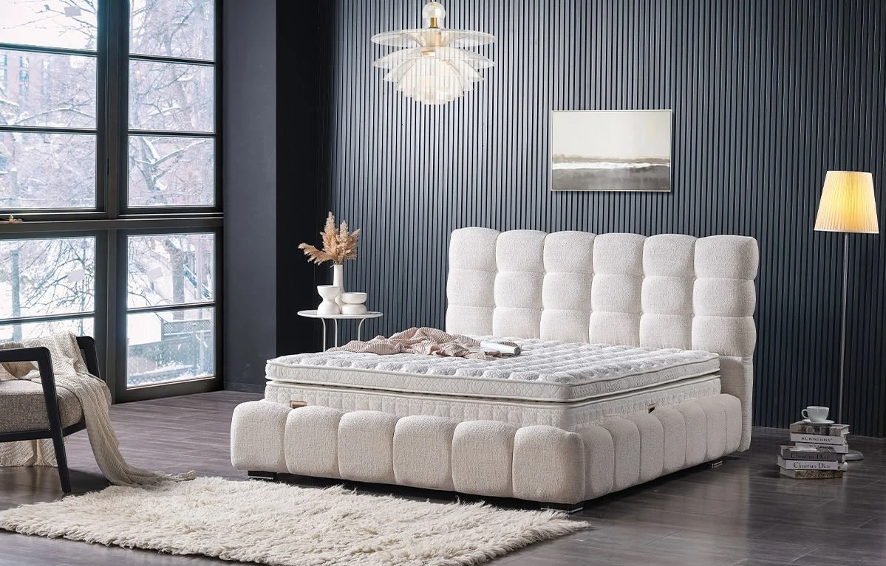
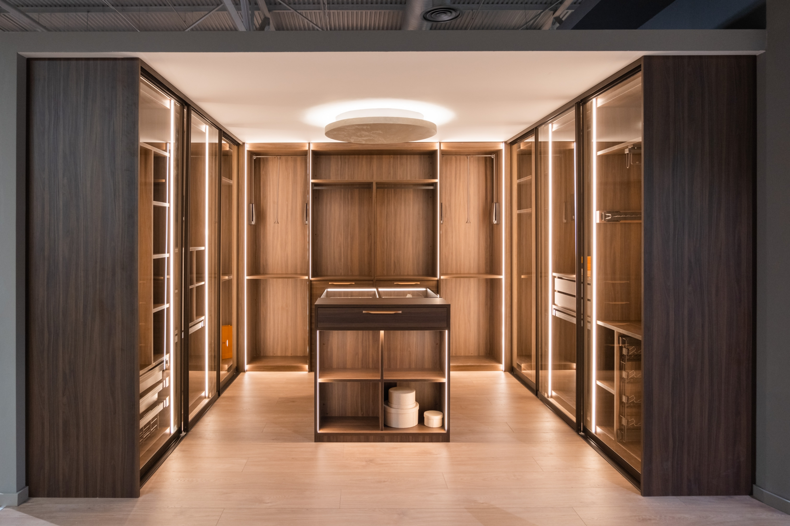
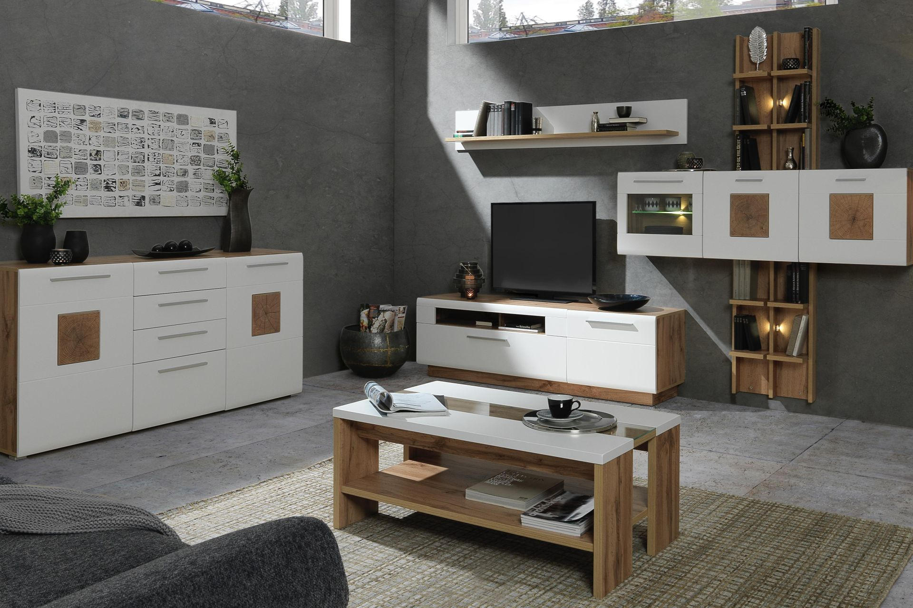
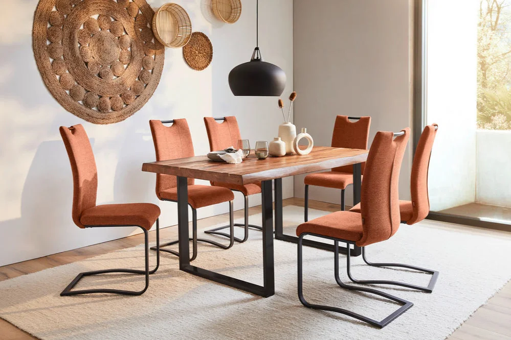
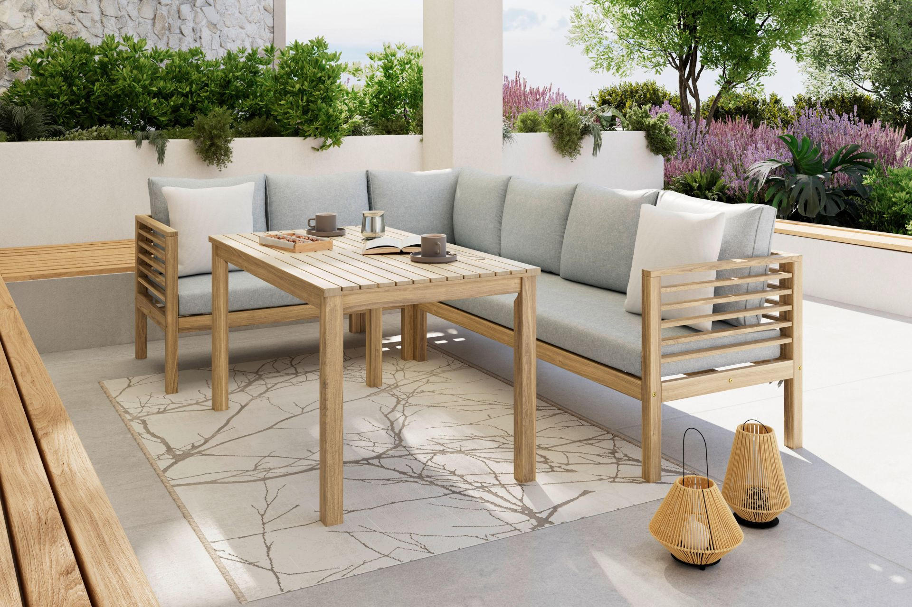

Kroz više od 20 godina intenzivnog razvoja postali smo vodeća tvrtka za proizvodnju i montažu ugradbenih ormara, kliznih vrata i sklopivih kreveta, sve po mjeri. Eduro je postao sinonim za kvalitetu, točnu isporuku i preciznu montažu. Surađujući sa stranim predstavnicima ugradbenih ormara po mjeri, sredinom 90-ih godina prošlog stoljeća, vidjeli smo, naime, nedostatke kliznih sustava, kako u materijalima tako i u izradi. Tu smo prepoznali svoju priliku! Naša poduzetnička priča počinje 1998. godine, kada smo započeli samostalnu proizvodnju. Znali smo da u ovoj specifičnoj niši možemo napraviti proizvod više kvalitete od onog koji se do tada nudio na tržištu i zadovoljiti veliku potrebu kupaca za izradom namještaja po mjeri, prvenstveno ugradbenih ormara s kliznim vratima. Usavršili smo sva dosadašnja iskustva u prodaji, montaži i logistici te se usudili proizvesti VLASTITE KLIZNE SUSTAVE s vodilicama i aluminijskim okovima. Kvalitetu proizvoda dodatno smo naglasili nazivom robne marke EDURO, što na latinskom znači „trajati“. Specijalizirani smo za sve vrste opremanja stanova, kuća, hotelskih soba, apartmana i poslovnih ureda namještajem iz vlastite proizvodnje. EDURO d.o.o. prisutan je u Zagrebu, Splitu, Rijeci i Zadru putem vlastitih podružnica ili zastupništva, te vlastitog proizvodnog pogona u Velikoj Gorici. Trenutno zapošljavamo oko 45 djelatnika u našoj tvornici i podružnicama.




